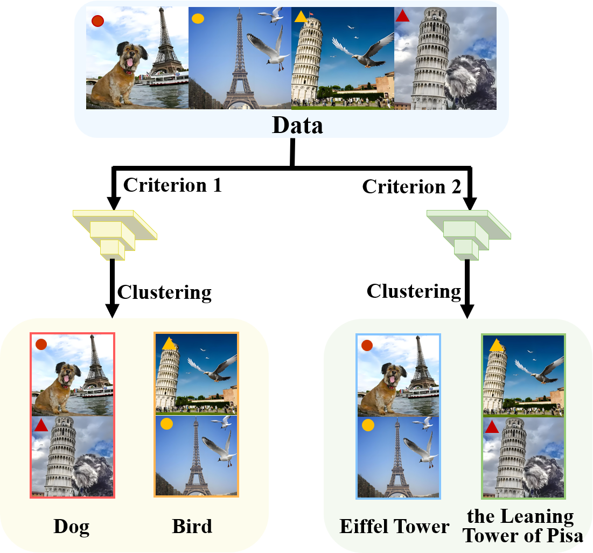
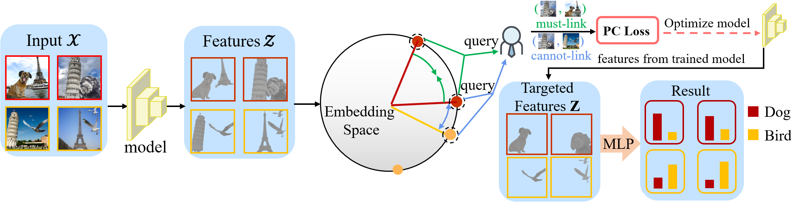
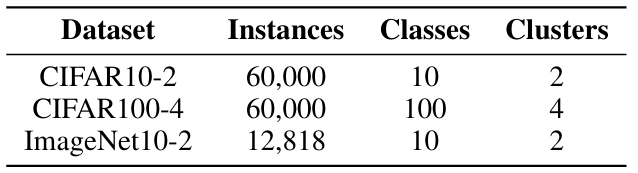
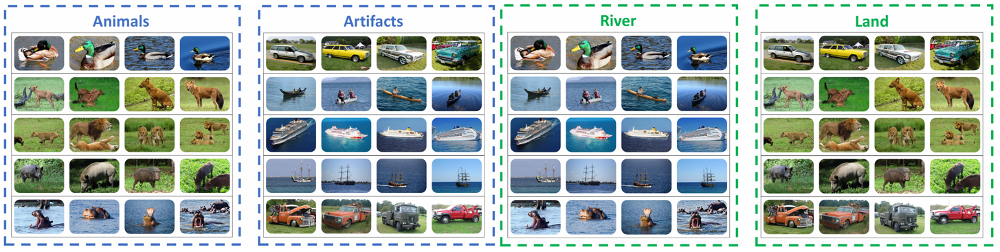
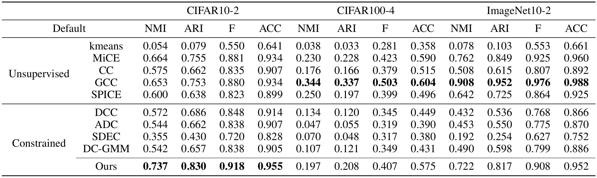
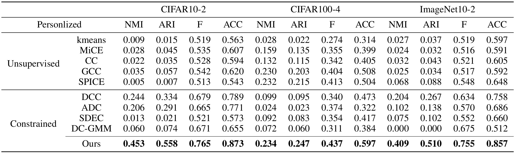
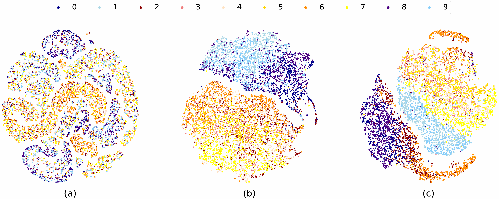
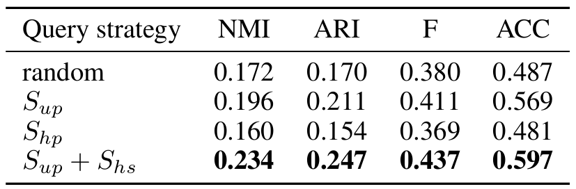
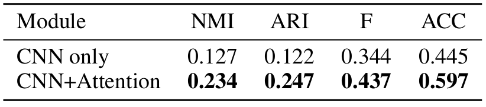

Personalized Clustering via Targeted Representation Learning
Anonymous Author
1. Abstract
Clustering traditionally aims to reveal a natural grouping structure model from unlabeled data. However, this model may not always be ideal for users' preference. In this paper, we propose a personalized clustering method which explicitly performs targeted representation learning by interacting with users via modicum task information (e.g., must-link or cannot-link pairs) to guide the clustering orientation. First, we query users with the the most informative pairs, i.e., those pairs most hard to cluster and those most easy to miscluster, to facilitate the representation learning in terms of the clustering preference. And then, by exploiting attention mechanism the targeted representation is learned and augmented. By leveraging the targeted representation and constraint clustering loss as well, personalized clustering is obtained. Theoretically, we verify that the risk of personalized clustering is tightly bounded, that guarantees active queries to users do mitigate the clustering risk. Experimentally, extensive results show that our method performs well across different clustering tasks and datasets, even with a limited number of queries.
2. Problem Defination
(Section 1) In the domain of image clustering, varying tasks often entail distinct clustering objectives. It is evident that unsupervised methods may not consistently excel across all clustering dimensions. This paper introduces a weakly supervised clustering approach, augmented by active learning, to adaptively address clustering tasks aligned with different clustering orientations, as illustrated in Figure 1.

Figure 1: The diversity of clustering orientation. Different tasks have different orientations for feature learning and image clustering.
(Subsection 3.1) For the image datasets, data is initially defined by generating original positive instance pairs through data augmentation techniques. Subsequently, based on the clustering results from each training iteration, the most informative sample pairs are selected for query. The clustering orientation is then learned from the existing positive and negative instance pairs. Ultimately, this process yields clustering results tailored to meet the specific objectives of the task at hand.
3.Illustration of Our Framework
Our method mentioned above is presented in Section 3.2 & Section 3.3 & Appendix A . A deep neural network creates representations from two random augmentations of the data. By assessing the position of images in the feature space, the framework selects the most informative sample pairs to guide the training orientation of the model. The model is then retrained by querying whether these pairs are must-link or cannot-link. This approach allows the final model to concentrate on features relevant to the desired clustering orientation, resulting in accurate clustering outcomes. Our framework can be illustrated in Figure 2.

Figure 2: The framework of Personalized Clustering.
4. Theoretical Analysis
We propose a theoretical analysis to verify effectiveness of active query in constraint clustering. Simultaneously, the tight upper bound of generalization risk of PCL is given as well.
(Subsection 3.4 & Appendix C)Definition 4.1 (Unsupervised Loss.)
We need to measure the effect of clustering by an unsupervised loss. If we can query $q$ times, the overall unsupervised loss is defined as:
$$
\hat{\mathcal{L}}_q(f) := \frac{1}{2N}\sum_{i=1}^{2N}\ell_i^{'}(f).
$$
and $\hat{f}_{q}$ is defined as $\arg \min_{f \in \mathcal{F}} \hat{\mathcal{L}}_{q}(f)$,$\quad q$ is the total num of query. The unsupervised population loss after $q$ queries is defined as:
$$
\mathcal{L}_q(f) := \mathbb{E}_{x \sim \mathcal{X}}[\hat{\mathcal{L}}_q(f)],
$$
and $f^{*}_{q}$ is defined as $\arg \min_{f \in \mathcal{F}} \mathcal{L}_{q}(f)$.
(Subsection 3.4 & Appendix C)Theorem 4.1 (Excess Risk)
Theorem 3.1 Suppose we can completely query each sample. We use $Q$ as the total number of queries. With probability at least $1-\delta$,
$$
|\mathcal{\hat{L}}_{Q}(\hat{f}_{Q}) - \mathcal{L}_{Q}(f^{*}_{Q}) | \leq \mathcal{O}(\frac{\eta \mathcal{R}_{\mathcal{S}}(\mathcal{F})}{N} + \sqrt{\frac{\log\frac{1}{\delta}}{N}}).
$$
where $\mathcal{R}_{\mathcal{S}}(\mathcal{F})$ is the Rademacher complexity of $\mathcal{F}$ with respect to training set $\mathcal{S}$, and $\eta$ is the Lipschitz constant.
Theorem 3.1 indicates that $\mathcal{L}_{Q}(f^{*}_{Q})$ can be well bounded if the trained model $\hat{f}_{Q}$ is good.
However, due to the limited queries (less than $Q$), we cannot calculate $\mathcal{\hat{L}}_{Q}(\hat{f}_{Q})$. As a compromise, can we get closer to it?
(Subsection 3.4 & Appendix C)Theorem 3.2 (Queries Reduce the Gap)
We only consider adding one query. If $q \ll N$:
$$
|\mathcal{\hat{L}}_{q}(\hat{f}_{q}) - \mathcal{\hat{L}}_{Q}(\hat{f}_{Q})| \geq |\mathcal{\hat{L}}_{q+1}(\hat{f}_{q+1}) - \mathcal{\hat{L}}_{Q}(\hat{f}_{Q})|.
$$
This just matches the process of algorithm:
we initially make a new query request based on the existing model $\hat{f}_{q}$,
followed by updating $\mathcal{\hat{L}}_{q}$ to $\mathcal{\hat{L}}_{q+1}$ based on the query results,
and finally optimizing the loss to get $\hat{f}_{q+1}$.
Theorem 3.2 guarantees the gap between the loss of the current model and the complete queries loss will be reduced after each query. Now we show that our strategy is indeed effective.
(Subsection 3.4 & Appendix C)Theorem 3.3 (Query Strategy Is Effective)
Suppose $q \ll N$, the sample pair $(\mathbf x_i, \mathbf x_j)$ is queried, and the result is cannot-link, we have:
$$
|\mathcal{\hat{L}}_{q}(f) - \mathcal{\hat{L}}_{q+1}(f)| \propto \mathcal \exp \left(\mathcal{S}_{up}(\mathbf x_i,\mathbf x_j)\right),
$$
and if the result is must-link, we have:
$$
|\mathcal{\hat{L}}_{q}(f) - \mathcal{\hat{L}}_{q+1}(f)| \propto \mathcal S_{up}(\mathbf x_i,\mathbf x_j).
$$
Since we want to reduce the gap in Theorem 3.2, we should equivalently maximize $|\mathcal{\hat{L}}_{q}(f) - \mathcal{\hat{L}}_{q+1}(f)|$ and then train the model according to $\mathcal{\hat{L}}_{q+1}$.
Theorem 3.3 states that our query strategy is effective in this sense,
because when $q$ is small, $\mathcal{S}_{up}$ matters more in the scoring function.
Besides, we have added $\mathcal{S}_{hp}$ in the score and weight it more if $q$ is larger, making our strategy more robust and efficient.
The following experiments have proved the effectiveness in practice.
5. Experiments
(Subsection 4.1 & Appendix B)Datasets. Our experiments are conducted on three datasets (CIFAR10-2, CIFAR100-4, Imagenet10-2) with two different orientations, encompassing three benchmark datasets (CIFAR-10, CIFAR-100, Imagenet-10), along with an artificial cross-dataset. The details of the datasets are as follows.

Table 1: A summary of the datasets.
Figure 3 shows an example of two clustering orientations from the same original dataset. The details of creating our target dataset can be found at (Appendix B)

Figure 3: The default and personalized orientation designed artificially.
(Subsection 4.2 )Partial Experimental Results.

Table 2: The clustering performance under the default orientation, on three object image benchmarks. The default orientation completely follows the tendency of deep clustering. The final results are shown in boldface.

Table 3: The clustering performance under the personalized orientation, on three object image benchmarks. The personalized target orientation is artificially designed opposite to the default one. The final results are shown in boldface.
(Subsection 4.3)Visualization Results.
Subfigure (a) depicts that the instance points before clustering is chaos. Subfigure (b) depicts that the yellow and orange instance points cluster together, while in subfigure (c) the dark blue and dark orange dots are clustered together. The above facts show that it is workable for PCL to cluster according to the demand of tasks.

Figure 4: The distribution of instances in CIFAR10-2 after clustering.
(Subsection 4.3)Ablation Studies.
We performed two ablation analysis by removing components of the query strategy and cross-attention module.

Table 4:Effect of query strategy in personlized clustering on CIFAR100-4

Table 5:Effect of Cross-Attention Module in personlized clustering on CIFAR100-4
6. Contribution
We propose a novel model, called PCL, for personalized clustering task, which leverages active query to control the targeted representation learning.
A theoretical analysis on clustering is conducted to verify effectiveness of active query in constraint clustering. Simultaneously, the tight upper bound of generalization risk of PCL is given as well.
Extensive experiments show that our model outperforms four deep clustering approaches, three semi-supervised clustering approaches, and two active clustering approaches on three image datasets. Our active query strategy also performs well compared to other methods.
7. Code
Please access our code through an anonymous link: PCL.